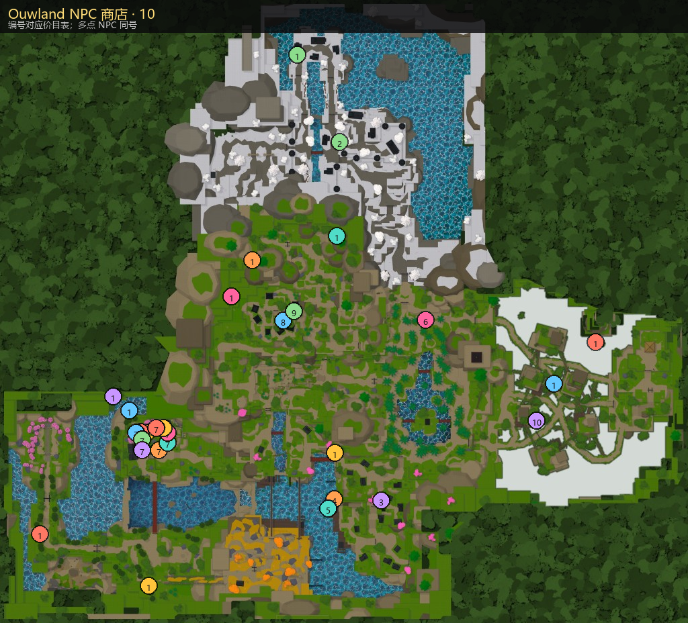

菜单商店（罗宝 / 矿石）
打开菜单 M → 商店。顶部可切换 罗宝 与 矿石 付款；也可填「赠送给……」给他人购买。
- 矿石价公式：
ceil(罗宝标价 ÷ 15)，最少 1。 - 下表同时列出两种货币；与游戏界面一致。
- 部分商品购买前会二次确认（重置类）。
主页 / 商店
打开菜单 M → 商店。顶部可切换 罗宝 与 矿石 付款；也可填「赠送给……」给他人购买。
ceil(罗宝标价 ÷ 15)，最少 1。限时倍率。生效期间对应资源获取翻倍（同类增益一般取最高档）。
| 商品 | 作用 | 时长 | 罗宝 | 矿石 |
|---|---|---|---|---|
| 2x EXP | 经验 ×2 | 30 分钟 | 200 | 14 |
| 2x Wen | 文（金币）×2 | 15 分钟 | 240 | 16 |
| 2x Luck | 幸运 ×2（影响掉落等） | 15 分钟 | 300 | 20 |
| 2x Mastery | 精通经验 ×2 | 30 分钟 | 150 | 10 |
| 2x Souls | 灵魂 ×2 | 30 分钟 | 100 | 7 |
清空对应养成并允许重选。购买后通常需确认。
| 商品 | 作用 | 罗宝 | 矿石 |
|---|---|---|---|
| 重置呼吸 | 清除已学呼吸，可改学其他呼吸 | 100 | 7 |
| 重置战斗风格 | 清除体术（苍龙 / 太极 / 收割之刃等） | 100 | 7 |
| 重置邪恶艺术 | 清除血鬼技 / 邪恶艺术 | 25 | 2 |
| 重置技能点 | 退回已花技能点，可重点技能树（精通进度不退） | 150 | 10 |
| 重置比赛（种族） | 重置种族（人类 / 鬼 / 混血等），需重开养成路径 | 150 | 10 |
| 重置声望 | 清空阵营声望进度 | 50 | 4 |
说明：界面若曾显示「重置邪恶艺术」为 100 罗宝，以当前价目 25 罗宝 / 2 矿石 为准。
用于公会滚动、邪恶艺术滚动等抽卡。买的是次数，不是直接出货。
| 商品 | 次数 | 罗宝 | 矿石 | 单次罗宝 |
|---|---|---|---|---|
| 1 次旋转 | 1 | 5 | 1 | 5.0 |
| 15 次旋转 | 15 | 60 | 4 | 4.0 |
| 25 次旋转 | 25 | 90 | 6 | 3.6 |
| 50 次旋转 | 50 | 150 | 10 | 3.0 |
| 100 次旋转 | 100 | 270 | 18 | 2.7 |
| 250 次旋转 超值 | 250 | 600 | 40 | 2.4 |
公会概率与技能见 公会 / 肤色。
商店列表下方有 VIP 分区。未开通 VIP 时整区被遮罩，点击会引导购买 VIP。
| 商品 | 作用 | 时长 | 罗宝 | 矿石 |
|---|---|---|---|---|
| 4x Luck | 幸运 ×4（高于普通 2x Luck） | 30 分钟 | 850 | 57 |
与菜单罗宝商店不同，下列用游戏内货币文（及材料）交易。点击物品名进档案；地图编号与下表一致。

| # | NPC | 区域 | 坐标 | 主要商品 |
|---|---|---|---|---|
| 1 | 黑商Black Marketer | 多区域 / 活动 | -133, 804, 101 · 11 点 | |
| 2 | 冬店代表·林克斯Winter Store Rep Lynx | 冰纱谷 | -92, 1353, -2706 | 铲子 |
| 3 | 银造Ginzo | 迷雾港湾 | 274, 942, 528 | 金属碎料、丝线 |
| 4 | 炼金术师·梅库Alchemist Meku | 迷雾港湾 | -138, 801, 519 | 生命药剂、生命回复药剂、体力回复药剂、水下呼吸药水 |
| 5 | 渔夫·杰索Fisherman Jeso | 迷雾港湾 | -192, 807, 603 | 基础钓竿、稀有钓竿、蠕虫 |
| 6 | 黑Kuro | 竹林 | 667, 1121, -1101 | 黑龙角、黑绳项链、樱花灯笼、勇者冠冕、生命回复药水、夜之心项链、象牙边披风、薄荷围巾、至日项链、体力回复药水 等 14 种 |
| 7 | 莲Ren | 蝴蝶庄园 | -1795, 312, -85 · 10 点 | 大葫芦、中葫芦、小葫芦 |
| 8 | 雷兹Raze | 风之峰 | -594, 1242, -1095 | 华美刀、普通日轮刀 |
| 9 | 理香Rika | 风之峰 | -496, 1249, -1177 | 生命回复药水、体力回复药水 |
| 10 | 饵贩·海苔Baitmonger Nori | 隐雾村 | 1643, 670, -190 | 鱼头、Golden Tentacle x10、Golden Tentacle x75 |
黑商为限时活动多点轮换；莲（Ren）在蝴蝶庄园一带多点巡逻。详细单价见各物品档案页。